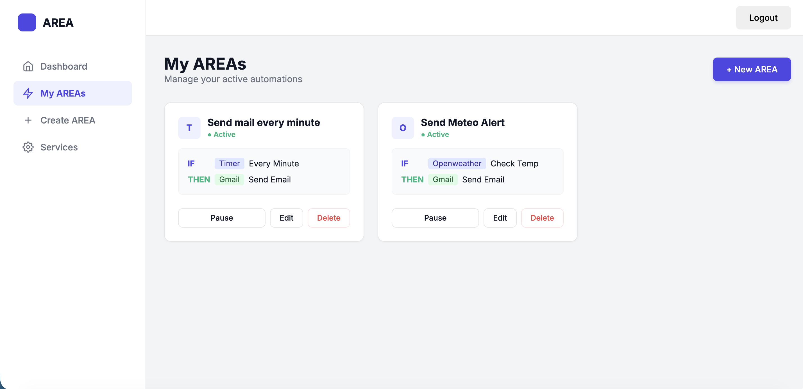

Plateforme d'Automatisation (Clone IFTTT)
Développement de A à Z d'une plateforme d'automatisation. Architecture complexe permettant de lier différents services web entre eux.
PythonPostgreSQLReactFlutter
Voir sur GitHub →
Voir la démo →